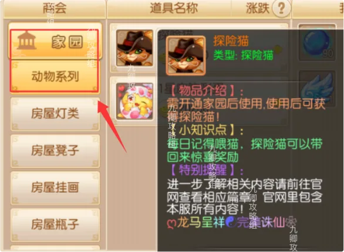
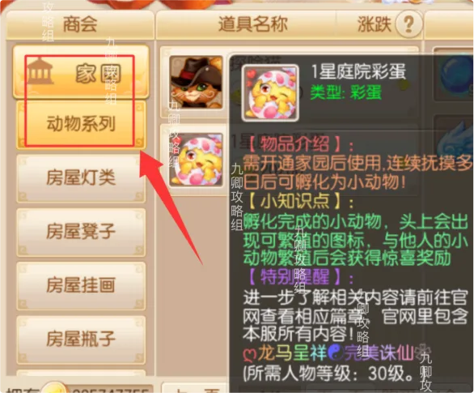
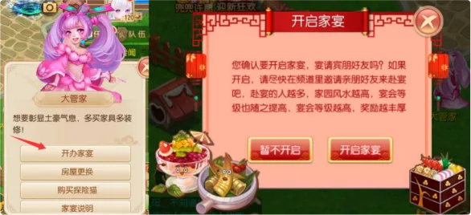
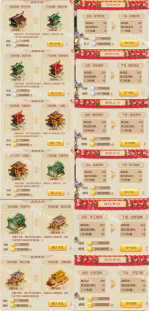

返回首页
智能客服
家园介绍
- 家园是游戏中的休闲养成玩法，拥有自己的私人庭院与房屋，可自由布置家具、提升风水与房屋评分。
等级限制：人物等级达到 50 级即可开通家园。
- 商会购买探险猫可以为你带来惊喜奖励，每日记得喂猫。

- 商会购买庭院彩蛋，繁殖后也能获得奖励。

- 同时每天中午会有神秘人来到家园，完成任务可以获得奖励。
- 家宴为全天活动，玩家自己可自由控制开启时间。家宴的佳肴只会在院落里刷新，不会在室内刷新。家宴除了房屋创建人可以开启，结婚后，夫妻双方也都可以开启家宴，次数共用。家宴一天可开启一次，不能重复开启。

- 家园 / 庭院等级开放上限至 7 级。

- 家具的风水计算件数指该种类家具参与风水值计算的最多件数，超出部分不计入风水值。
- 摆放同风格的家具达到指定件数，即可获得对应的风格评分加成。
- 以下为各类型家具的类别、名称与风水值一览，风水值越高对房屋评分加成越多。